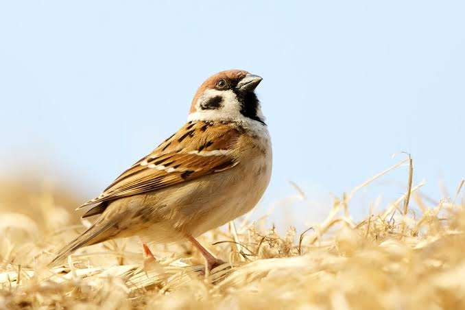

Sparrow
Birds
Old World sparrows are a family of small passerine birds. They are also known as true sparrows, names also used for a particular genus of the family, Passer.
Scientific name: Passeridae
Speed: House sparrow: 46 km/h
Lifespan: House sparrow: 3 years, Eurasian tree sparrow: 3 years
Mass: House sparrow: 24 – 40 g, Eurasian tree sparrow: 24 g, Chestnut sparrow: 12 – 17 g
Length: House sparrow: 14 – 18 cm, Eurasian tree sparrow: 12 – 14 cm, Chestnut sparrow: 10 – 12 cm
Clutch size: House sparrow: 4 – 5, Eurasian tree sparrow: 5 – 6, Chestnut sparrow: 3 – 4
The house sparrow (Passer domesticus) is a bird of the sparrow family Passeridae, found in most parts of the world. It is a small bird that has a typical length of 16 cm (6.3 in) and a mass of 24–39.5 g (0.85–1.39 oz).
Females and young birds are coloured pale brown and grey, and males have brighter black, white, and brown markings. One of about 25 species in the genus Passer, the house sparrow is native to most of Europe, the Mediterranean Basin, and a large part of Asia.
Its intentional or accidental introductions to many regions, including parts of Australasia, Africa, and the Americas, make it the most widely distributed wild bird.
The house sparrow is strongly associated with human habitation, and can live in urban or rural settings. Though found in widely varied habitats and climates, it typically avoids extensive woodlands, grasslands, and deserts away from human development.
It feeds mostly on the seeds of grains and weeds, but it is an opportunistic eater and commonly eats insects and many other foods. Its predators include domestic cats, hawks, owls, and many other predatory birds and mammals.
Because of its numbers, ubiquity, and association with human settlements, the house sparrow is culturally prominent. It is extensively, and usually unsuccessfully, persecuted as an agricultural pest.
It has also often been kept as a pet, as well as being a food item and a symbol of lust, sexual potency, commonness, and vulgarity. Though it is widespread and abundant, its numbers have declined in some areas. The animal's conservation status is listed as least concern on the IUCN Red List.
Biology of Sparrow
Measurements and shape
The house sparrow is typically about 16 cm (6.3 in) long, ranging from 14 to 18 cm (5.5 to 7.1 in).[3] It is a compact bird with a full chest and a large, rounded head.
Its bill is stout and conical with a culmen length of 1.1–1.5 cm (0.43–0.59 in), strongly built as an adaptation for eating seeds. Its tail is short, at 5.2–6.5 cm (2.0–2.6 in) long. The wing chord is 6.7–8.9 cm (2.6–3.5 in), and the tarsus is 1.6–2.5 cm (0.63–0.98 in).
In mass, the house sparrow ranges from 24 to 39.5 g (0.85 to 1.39 oz). Females usually are slightly smaller than males. The median mass on the European continent for both sexes is about 30 g (1.1 oz), and in more southerly subspecies is around 26 g (0.92 oz).
Younger birds are smaller, males are larger during the winter, and females are larger during the breeding season. Birds at higher latitudes, colder climates, and sometimes higher altitudes are larger (under Bergmann's rule), both between and within subspecies.
Plumage
The plumage of the house sparrow is mostly different shades of grey and brown. The sexes exhibit strong dimorphism: the female is mostly buffish above and below, while the male has boldly coloured head markings, a reddish back, and grey underparts.
The male has a dark grey crown from the top of its bill to its back, and chestnut brown flanking its crown on the sides of its head. It has black around its bill, on its throat, and on the spaces between its bill and eyes (lores).
It has a small white stripe between the lores and crown and small white spots immediately behind the eyes (postoculars), with black patches below and above them.
The underparts are pale grey or white, as are the cheeks, ear coverts, and stripes at the base of the head. The upper back and mantle are a warm brown, with broad black streaks, while the lower back, rump and upper tail coverts are greyish brown.
Voice
Most house sparrow vocalisations are variations on its short and incessant chirping call. Transcribed as chirrup, tschilp, or philip, this note is made as a contact call by flocking or resting birds, or by males to proclaim nest ownership and invite pairing.
In the breeding season, the male gives this call repetitively, with emphasis and speed, but not much rhythm, forming what is described either as a song or an "ecstatic call" similar to a song. Young birds also give a true song, especially in captivity, a warbling similar to that of the European greenfinch.
Aggressive males give a trilled version of their call, transcribed as "chur-chur-r-r-it-it-it-it". This call is also used by females in the breeding season, to establish dominance over males while displacing them to feed young or incubate eggs.
House sparrows give a nasal alarm call, the basic sound of which is transcribed as quer, and a shrill chree call in great distress.Another vocalisation is the "appeasement call", a soft quee given to inhibit aggression, usually given between birds of a mated pair. These vocalisations are not unique to the house sparrow, but are shared, with small variations, by all sparrows.
Variation
Some variation is seen in the 12 subspecies of house sparrows, which are divided into two groups, the Oriental P. d. indicus group, and the Palaearctic P. d. domesticus group.
Birds of the P. d. domesticus group have grey cheeks, while P. d. indicus group birds have white cheeks, as well as bright colouration on the crown, a smaller bill, and a longer black bib. The subspecies P. d. tingitanus differs little from the nominate subspecies, except in the worn breeding plumage of the male, in which the head is speckled with black and underparts are paler.
P. d. balearoibericus is slightly paler than the nominate, but darker than P. d. bibilicus. P. d. bibilicus is paler than most subspecies, but has the grey cheeks of P. d. domesticus group birds.
The similar P. d. persicus is paler and smaller, and P. d. niloticus is nearly identical but smaller. Of the less widespread P. d. indicus group subspecies, P. d. hyrcanus is larger than P. d. indicus, P. d. hufufae is paler, P. d. bactrianus is larger and paler, and P. d. parkini is larger and darker with more black on the breast than any other subspecies.
Identification
The house sparrow can be confused with a number of other seed-eating birds, especially its relatives in the genus Passer. Many of these relatives are smaller, with an appearance that is neater or "cuter", as with the Dead Sea sparrow.
The dull-coloured female can often not be distinguished from other females, and is nearly identical to those of the Spanish and Italian sparrows. The Eurasian tree sparrow is smaller and slenderer with a chestnut crown and a black patch on each cheek.
The male Spanish sparrow and Italian sparrow are distinguished by their chestnut crowns. The Sind sparrow is very similar but smaller, with less black on the male's throat and a distinct pale supercilium on the female.
Taxonomy
The genus Passer contains about 25 species, depending on the authority, 26 according to the Handbook of the Birds of the World. Most Passer species are dull-coloured birds with short, square tails and stubby, conical beaks, between 11 and 18 cm (4.3 and 7.1 in) long.
Mitochondrial DNA studies suggest that speciation in the genus occurred during the Pleistocene and earlier, while other evidence suggests speciation occurred 25,000 to 15,000 years ago.
Within Passer, the house sparrow is part of the "Palaearctic black-bibbed sparrows" group and a close relative of the Mediterranean "willow sparrows".
The taxonomy of the house sparrow and its Mediterranean relatives is complicated. The common type of "willow sparrow" is the Spanish sparrow, which resembles the house sparrow in many respects. It frequently prefers wetter habitats than the house sparrow, and it is often colonial and nomadic.
In most of the Mediterranean, one or both species occur, with some degree of hybridisation. In North Africa, the two species hybridise extensively, forming highly variable mixed populations with a full range of characters from pure house sparrows to pure Spanish sparrows.
Subspacies
A large number of subspecies have been named, of which 12 were recognised in the Handbook of the Birds of the World. These subspecies are divided into two groups, the Palaearctic P. d. domesticus group, and the Oriental P. d. indicus group.
Several Middle Eastern subspecies, including P. d. biblicus, are sometimes considered a third, intermediate group. The subspecies P. d. indicus was described as a species, and was considered to be distinct by many ornithologists during the 19th century.
Migratory birds of the subspecies P. d. bactrianus in the P. d. indicus group were recorded overlapping with P. d. domesticus birds without hybridising in the 1970s, so the Soviet scientists Edward I.
Gavrilov and M. N. Korelov proposed the separation of the P. d. indicus group as a separate species. However, P. d. indicus-group and P. d. domesticus-group birds intergrade in a large part of Iran, so this split is rarely recognised.
Social behaviour
The house sparrow is a very social bird. It is gregarious during all seasons when feeding, often forming flocks with other species of birds.
It roosts communally, its nests are usually grouped together in clumps, and it engages in social activities such as dust or water bathing and "social singing", in which birds call together in bushes.
The house sparrow feeds mostly on the ground, but it flocks in trees and bushes. At feeding stations and nests, female house sparrows are dominant despite their smaller size, and they can fight over males in the breeding season.
Sleep and roosting
House sparrows sleep with the bill tucked underneath the scapular feathers. Outside of the reproductive season, they often roost communally in trees or shrubs.
Much communal chirping occurs before and after the birds settle in the roost in the evening, as well as before the birds leave the roost in the morning. Some congregating sites separate from the roost may be visited by the birds prior to settling in for the night.
Feeding
As an adult, the house sparrow mostly feeds on the seeds of grains and weeds, but it is opportunistic and adaptable, and eats whatever foods are available.
In towns and cities, it often scavenges for food in garbage containers and congregates in the outdoors of restaurants and other eating establishments to feed on leftover food and crumbs.
It can perform complex tasks to obtain food, such as opening automatic doors to enter supermarkets, clinging to hotel walls to watch vacationers on their balconies, and nectar robbing kowhai flowers.
In common with many other birds, the house sparrow requires grit to digest the harder items in its diet. Grit can be either stone, often grains of masonry, or the shells of eggs or snails; oblong and rough grains are preferred.
Several studies of the house sparrow in temperate agricultural areas have found the proportion of seeds in its diet to be about 90%. It will eat almost any seeds, but where it has a choice, it prefers oats and wheat.
In urban areas, the house sparrow feeds largely on food provided directly or indirectly by humans, such as bread, though it prefers raw seeds.
The house sparrow also eats some plant matter besides seeds, including buds, berries, and fruits such as grapes and cherries. In temperate areas, the house sparrow has an unusual habit of tearing flowers, especially yellow ones, in the spring.
Breeding
House sparrows can breed in the breeding season immediately following their hatching, and sometimes attempt to do so. Some birds breeding for the first time in tropical areas are only a few months old and still have juvenile plumage.
Birds breeding for the first time are rarely successful in raising young, and reproductive success increases with age, as older birds breed earlier in the breeding season, and fledge more young.
As the breeding season approaches, hormone releases trigger enormous increases in the size of the sexual organs and changes in day length lead males to start calling by nesting sites.
The timing of mating and egg-laying varies geographically, and between specific locations and years because a sufficient supply of insects is needed for egg formation and feeding nestlings.
Males take up nesting sites before the breeding season, by frequently calling beside them. Unmated males start nest construction and call particularly frequently to attract females.